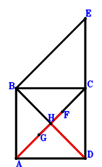
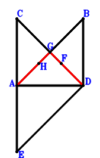
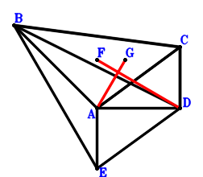
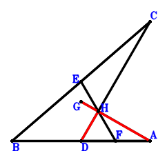
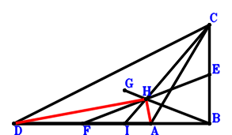

Exercise 23： Let EBAC be a parallelogram. F is the centroid of △BDC. G is the centroid of △BAD. G, H, C are collinear and HC=3GH. ED=2AD. Prove that AF⊥HD.

\(\because \) EBAC is a parallelogram \(\therefore \small\overrightarrow{DE}=- \small\overrightarrow{DA} + \small\overrightarrow{DB} + \small\overrightarrow{DC}\).\(\because \) F is the centroid of △BDC \(\therefore \small\overrightarrow{DF}=\dfrac{\small\overrightarrow{DB}}{3} + \dfrac{\small\overrightarrow{DC}}{3}\).\(\because \) G is the centroid of △BAD \(\therefore \small\overrightarrow{DG}=\dfrac{\small\overrightarrow{DA}}{3} + \dfrac{\small\overrightarrow{DB}}{3}\).\(\because \) G, H, C are collinear and HC=3GH \(\therefore \small\overrightarrow{DH}=\dfrac{\small\overrightarrow{DC}}{4} + \dfrac{3 \small\overrightarrow{DG}}{4}=\dfrac{\small\overrightarrow{DA}}{4} + \dfrac{\small\overrightarrow{DB}}{4} + \dfrac{\small\overrightarrow{DC}}{4}\).\(\because \) ED=2AD \( \therefore\small\overrightarrow{DA}^{2} - \dfrac{\small\overrightarrow{DE}^{2}}{4}=\small\overrightarrow{DA}^{2} - \dfrac{\left(- \small\overrightarrow{DA} + \small\overrightarrow{DB} + \small\overrightarrow{DC}\right)^{2}}{4}=\dfrac{3 \small\overrightarrow{DA}^{2}}{4} + \dfrac{\small\overrightarrow{DA} \cdot \small\overrightarrow{DB}}{2} + \dfrac{\small\overrightarrow{DA} \cdot \small\overrightarrow{DC}}{2} - \dfrac{\small\overrightarrow{DB}^{2}}{4} - \dfrac{\small\overrightarrow{DB} \cdot \small\overrightarrow{DC}}{2} - \dfrac{\small\overrightarrow{DC}^{2}}{4}=0.\)In conclusion, \(\small\overrightarrow{AF} \cdot \small\overrightarrow{DH}=\small\overrightarrow{DH} \cdot \left(- \small\overrightarrow{DA} + \small\overrightarrow{DF}\right)=\left(- \small\overrightarrow{DA} + \dfrac{\small\overrightarrow{DB}}{3} + \dfrac{\small\overrightarrow{DC}}{3}\right) \cdot \left(\dfrac{\small\overrightarrow{DA}}{4} + \dfrac{\small\overrightarrow{DB}}{4} + \dfrac{\small\overrightarrow{DC}}{4}\right)=- \dfrac{\small\overrightarrow{DA}^{2}}{4} - \dfrac{\small\overrightarrow{DA} \cdot \small\overrightarrow{DB}}{6} - \dfrac{\small\overrightarrow{DA} \cdot \small\overrightarrow{DC}}{6} + \dfrac{\small\overrightarrow{DB}^{2}}{12} + \dfrac{\small\overrightarrow{DB} \cdot \small\overrightarrow{DC}}{6} + \dfrac{\small\overrightarrow{DC}^{2}}{12}=0\), that is, AF⊥HD.
Exercise 52： Let BAED be a parallelogram. H is the centroid of △CAD. F is the centroid of △BAD. C, G, F are collinear and CG=3GF. H, G, B are collinear and GB=3HG. CE=2AD. Prove that GD⊥AG.

\(\because \) BAED is a parallelogram \(\therefore \small\overrightarrow{DE}=\small\overrightarrow{DA} - \small\overrightarrow{DB}\).\(\because \) F is the centroid of △BAD \(\therefore \small\overrightarrow{DF}=\dfrac{\small\overrightarrow{DA}}{3} + \dfrac{\small\overrightarrow{DB}}{3}\).\(\because \) C, G, F are collinear and CG=3GF \(\therefore \small\overrightarrow{DG}=\dfrac{\small\overrightarrow{DC}}{4} + \dfrac{3 \small\overrightarrow{DF}}{4}=\dfrac{\small\overrightarrow{DA}}{4} + \dfrac{\small\overrightarrow{DB}}{4} + \dfrac{\small\overrightarrow{DC}}{4}\).\(\because \) H is the centroid of △CAD \(\therefore \small\overrightarrow{DH}=\dfrac{\small\overrightarrow{DA}}{3} + \dfrac{\small\overrightarrow{DC}}{3}\).\(\because \) H, G, B are collinear and GB=3HG \( \therefore- \dfrac{\small\overrightarrow{CE}^{2}}{4} + \small\overrightarrow{DA}^{2}=\small\overrightarrow{DA}^{2} - \dfrac{\left(- \small\overrightarrow{DC} + \small\overrightarrow{DE}\right)^{2}}{4}=\small\overrightarrow{DA}^{2} - \dfrac{\left(\small\overrightarrow{DA} - \small\overrightarrow{DB} - \small\overrightarrow{DC}\right)^{2}}{4}=\dfrac{3 \small\overrightarrow{DA}^{2}}{4} + \dfrac{\small\overrightarrow{DA} \cdot \small\overrightarrow{DB}}{2} + \dfrac{\small\overrightarrow{DA} \cdot \small\overrightarrow{DC}}{2} - \dfrac{\small\overrightarrow{DB}^{2}}{4} - \dfrac{\small\overrightarrow{DB} \cdot \small\overrightarrow{DC}}{2} - \dfrac{\small\overrightarrow{DC}^{2}}{4}=0.\)In conclusion, \(\small\overrightarrow{AG} \cdot \small\overrightarrow{DG}=\small\overrightarrow{DG} \cdot \left(- \small\overrightarrow{DA} + \small\overrightarrow{DG}\right)=\left(- \dfrac{3 \small\overrightarrow{DA}}{4} + \dfrac{\small\overrightarrow{DB}}{4} + \dfrac{\small\overrightarrow{DC}}{4}\right) \cdot \left(\dfrac{\small\overrightarrow{DA}}{4} + \dfrac{\small\overrightarrow{DB}}{4} + \dfrac{\small\overrightarrow{DC}}{4}\right)=- \dfrac{3 \small\overrightarrow{DA}^{2}}{16} - \dfrac{\small\overrightarrow{DA} \cdot \small\overrightarrow{DB}}{8} - \dfrac{\small\overrightarrow{DA} \cdot \small\overrightarrow{DC}}{8} + \dfrac{\small\overrightarrow{DB}^{2}}{16} + \dfrac{\small\overrightarrow{DB} \cdot \small\overrightarrow{DC}}{8} + \dfrac{\small\overrightarrow{DC}^{2}}{16}=0\), that is, GD⊥AG.
Exercise 64： Let CAED be a parallelogram. F is the centroid of △BAC. G is the centroid of △BDC. BE=2AD. Prove that FD⊥AG.

\(\because \) CAED is a parallelogram \(\therefore \small\overrightarrow{DE}=\small\overrightarrow{DA} - \small\overrightarrow{DC}\).\(\because \) F is the centroid of △BAC \(\therefore \small\overrightarrow{DF}=\dfrac{\small\overrightarrow{DA}}{3} + \dfrac{\small\overrightarrow{DB}}{3} + \dfrac{\small\overrightarrow{DC}}{3}\).\(\because \) G is the centroid of △BDC \(\therefore \small\overrightarrow{DG}=\dfrac{\small\overrightarrow{DB}}{3} + \dfrac{\small\overrightarrow{DC}}{3}\).\(\because \) BE=2AD \( \therefore- \dfrac{\small\overrightarrow{BE}^{2}}{4} + \small\overrightarrow{DA}^{2}=\small\overrightarrow{DA}^{2} - \dfrac{\left(- \small\overrightarrow{DB} + \small\overrightarrow{DE}\right)^{2}}{4}=\small\overrightarrow{DA}^{2} - \dfrac{\left(\small\overrightarrow{DA} - \small\overrightarrow{DB} - \small\overrightarrow{DC}\right)^{2}}{4}=\dfrac{3 \small\overrightarrow{DA}^{2}}{4} + \dfrac{\small\overrightarrow{DA} \cdot \small\overrightarrow{DB}}{2} + \dfrac{\small\overrightarrow{DA} \cdot \small\overrightarrow{DC}}{2} - \dfrac{\small\overrightarrow{DB}^{2}}{4} - \dfrac{\small\overrightarrow{DB} \cdot \small\overrightarrow{DC}}{2} - \dfrac{\small\overrightarrow{DC}^{2}}{4}=0.\)In conclusion, \(\small\overrightarrow{AG} \cdot \small\overrightarrow{DF}=\small\overrightarrow{DF} \cdot \left(- \small\overrightarrow{DA} + \small\overrightarrow{DG}\right)=\left(- \small\overrightarrow{DA} + \dfrac{\small\overrightarrow{DB}}{3} + \dfrac{\small\overrightarrow{DC}}{3}\right) \cdot \left(\dfrac{\small\overrightarrow{DA}}{3} + \dfrac{\small\overrightarrow{DB}}{3} + \dfrac{\small\overrightarrow{DC}}{3}\right)=- \dfrac{\small\overrightarrow{DA}^{2}}{3} - \dfrac{2 \small\overrightarrow{DA} \cdot \small\overrightarrow{DB}}{9} - \dfrac{2 \small\overrightarrow{DA} \cdot \small\overrightarrow{DC}}{9} + \dfrac{\small\overrightarrow{DB}^{2}}{9} + \dfrac{2 \small\overrightarrow{DB} \cdot \small\overrightarrow{DC}}{9} + \dfrac{\small\overrightarrow{DC}^{2}}{9}=0\), that is, FD⊥AG.
Exercise 89： Let G be the centroid of △BDC. A, H, G are collinear and AH=3HG. F, E are the midpoints of AD, BC, respectively. AD=EF. Prove that AG⊥HD.

\(\because \) E is the midpoint of BC \(\therefore \small\overrightarrow{DE}=\dfrac{\small\overrightarrow{DB}}{2} + \dfrac{\small\overrightarrow{DC}}{2}\).\(\because \) F is the midpoint of AD \(\therefore \small\overrightarrow{DF}=\dfrac{\small\overrightarrow{DA}}{2}\).\(\because \) G is the centroid of △BDC \(\therefore \small\overrightarrow{DG}=\dfrac{\small\overrightarrow{DB}}{3} + \dfrac{\small\overrightarrow{DC}}{3}\).\(\because \) A, H, G are collinear and AH=3HG \(\therefore \small\overrightarrow{DH}=\dfrac{\small\overrightarrow{DA}}{4} + \dfrac{3 \small\overrightarrow{DG}}{4}=\dfrac{\small\overrightarrow{DA}}{4} + \dfrac{\small\overrightarrow{DB}}{4} + \dfrac{\small\overrightarrow{DC}}{4}\).\(\because \) AD=EF \( \therefore\small\overrightarrow{DA}^{2} - \small\overrightarrow{EF}^{2}=\small\overrightarrow{DA}^{2} - \left(- \small\overrightarrow{DE} + \small\overrightarrow{DF}\right)^{2}=\small\overrightarrow{DA}^{2} - \left(\dfrac{\small\overrightarrow{DA}}{2} - \dfrac{\small\overrightarrow{DB}}{2} - \dfrac{\small\overrightarrow{DC}}{2}\right)^{2}=\dfrac{3 \small\overrightarrow{DA}^{2}}{4} + \dfrac{\small\overrightarrow{DA} \cdot \small\overrightarrow{DB}}{2} + \dfrac{\small\overrightarrow{DA} \cdot \small\overrightarrow{DC}}{2} - \dfrac{\small\overrightarrow{DB}^{2}}{4} - \dfrac{\small\overrightarrow{DB} \cdot \small\overrightarrow{DC}}{2} - \dfrac{\small\overrightarrow{DC}^{2}}{4}=0.\)In conclusion, \(\small\overrightarrow{AG} \cdot \small\overrightarrow{DH}=\small\overrightarrow{DH} \cdot \left(- \small\overrightarrow{DA} + \small\overrightarrow{DG}\right)=\left(- \small\overrightarrow{DA} + \dfrac{\small\overrightarrow{DB}}{3} + \dfrac{\small\overrightarrow{DC}}{3}\right) \cdot \left(\dfrac{\small\overrightarrow{DA}}{4} + \dfrac{\small\overrightarrow{DB}}{4} + \dfrac{\small\overrightarrow{DC}}{4}\right)=- \dfrac{\small\overrightarrow{DA}^{2}}{4} - \dfrac{\small\overrightarrow{DA} \cdot \small\overrightarrow{DB}}{6} - \dfrac{\small\overrightarrow{DA} \cdot \small\overrightarrow{DC}}{6} + \dfrac{\small\overrightarrow{DB}^{2}}{12} + \dfrac{\small\overrightarrow{DB} \cdot \small\overrightarrow{DC}}{6} + \dfrac{\small\overrightarrow{DC}^{2}}{12}=0\), that is, AG⊥HD.
Exercise 104： Let I be the centroid of △BAD. G is the centroid of △CAD. B, H, G are collinear and BH=3HG. I, H, C are collinear and HC=3IH. F, E are the midpoints of AD, BC, respectively. AD=EF. Prove that HD⊥AH.

\(\because \) E is the midpoint of BC \(\therefore \small\overrightarrow{DE}=\dfrac{\small\overrightarrow{DB}}{2} + \dfrac{\small\overrightarrow{DC}}{2}\).\(\because \) F is the midpoint of AD \(\therefore \small\overrightarrow{DF}=\dfrac{\small\overrightarrow{DA}}{2}\).\(\because \) G is the centroid of △CAD \(\therefore \small\overrightarrow{DG}=\dfrac{\small\overrightarrow{DA}}{3} + \dfrac{\small\overrightarrow{DC}}{3}\).\(\because \) B, H, G are collinear and BH=3HG \(\therefore \small\overrightarrow{DH}=\dfrac{\small\overrightarrow{DB}}{4} + \dfrac{3 \small\overrightarrow{DG}}{4}=\dfrac{\small\overrightarrow{DA}}{4} + \dfrac{\small\overrightarrow{DB}}{4} + \dfrac{\small\overrightarrow{DC}}{4}\).\(\because \) I is the centroid of △BAD \(\therefore \small\overrightarrow{DI}=\dfrac{\small\overrightarrow{DA}}{3} + \dfrac{\small\overrightarrow{DB}}{3}\).\(\because \) I, H, C are collinear and HC=3IH \( \therefore\small\overrightarrow{DA}^{2} - \small\overrightarrow{EF}^{2}=\small\overrightarrow{DA}^{2} - \left(- \small\overrightarrow{DE} + \small\overrightarrow{DF}\right)^{2}=\small\overrightarrow{DA}^{2} - \left(\dfrac{\small\overrightarrow{DA}}{2} - \dfrac{\small\overrightarrow{DB}}{2} - \dfrac{\small\overrightarrow{DC}}{2}\right)^{2}=\dfrac{3 \small\overrightarrow{DA}^{2}}{4} + \dfrac{\small\overrightarrow{DA} \cdot \small\overrightarrow{DB}}{2} + \dfrac{\small\overrightarrow{DA} \cdot \small\overrightarrow{DC}}{2} - \dfrac{\small\overrightarrow{DB}^{2}}{4} - \dfrac{\small\overrightarrow{DB} \cdot \small\overrightarrow{DC}}{2} - \dfrac{\small\overrightarrow{DC}^{2}}{4}=0.\)In conclusion, \(\small\overrightarrow{AH} \cdot \small\overrightarrow{DH}=\small\overrightarrow{DH} \cdot \left(- \small\overrightarrow{DA} + \small\overrightarrow{DH}\right)=\left(- \dfrac{3 \small\overrightarrow{DA}}{4} + \dfrac{\small\overrightarrow{DB}}{4} + \dfrac{\small\overrightarrow{DC}}{4}\right) \cdot \left(\dfrac{\small\overrightarrow{DA}}{4} + \dfrac{\small\overrightarrow{DB}}{4} + \dfrac{\small\overrightarrow{DC}}{4}\right)=- \dfrac{3 \small\overrightarrow{DA}^{2}}{16} - \dfrac{\small\overrightarrow{DA} \cdot \small\overrightarrow{DB}}{8} - \dfrac{\small\overrightarrow{DA} \cdot \small\overrightarrow{DC}}{8} + \dfrac{\small\overrightarrow{DB}^{2}}{16} + \dfrac{\small\overrightarrow{DB} \cdot \small\overrightarrow{DC}}{8} + \dfrac{\small\overrightarrow{DC}^{2}}{16}=0\), that is, HD⊥AH.